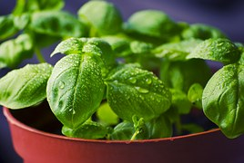
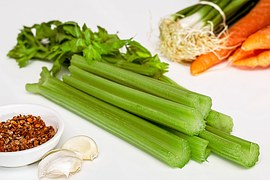
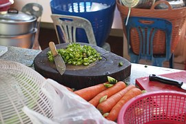

Parcourir
Choix de l'éditeur
Images
Vidéos
Photographes
Appareils photo
Inscrivez-vous
Connexion
Inscrivez-vous
Connexion
FAQ
Forum
Blog
Choix de l'éditeur
Images
Vidéos
Photographes
Appareils photo
FAQ
Forum
Blog
Toutes les images
Type de média
Toutes les images
Photos
Images vectorielles
Illustrations
Vidéos
Orientation
Horizontal
Vertical
Effets
Animation
Ralenti
Accéléré
Catégorie
Tous
Affaires/Finance
Alimentation/Boisson
Animaux
Architecture/Bâtiments
Arrières plans/Textures
Beauté/Mode
Industrie/Artisanat
Informatique/Communication
Lieux/Monuments
Musique
Nature/Paysages
Personnes
Religion
Santé/Médical
Science/Technologie
Sports
Transport/Trafic
Voyages/Vacances
Éducation
Émotions
Plus grand que
×
px
Couleur
Transparent
Noir et blanc
Résolution
4K (2160p)
HD (1080p)
plus...
Utilisez AND, OR, NOT et () pour affiner votre recherche de résultats:
flower AND (red OR blue) NOT rose
Recherche dans les portfolios d'utilisateur
user:stux flower
Par page
50
100
150
Aperçus des images
Safe Search
/ 60
‹
›
Populaire
Dernières
Populaire
✓
Toutes les images
Toutes les images
✓
Photos
Images vectorielles
Illustrations
Vidéos
Orientation
Toutes les orientations
✓
Horizontal
Vertical
Catégorie
Tous
✓
Affaires/Finance
Alimentation/Boisson
Animaux
Architecture/Bâtiments
Arrières plans/Textures
Beauté/Mode
Industrie/Artisanat
Informatique/Communication
Lieux/Monuments
Musique
Nature/Paysages
Personnes
Religion
Santé/Médical
Science/Technologie
Sports
Transport/Trafic
Voyages/Vacances
Éducation
Émotions
Taille
Plus grand que
×
px
Couleur
Transparent
Noir et blanc
Images sponsorisées
5 915 Images gratuites - Photos, Illustrations, Images vectorielles:
Légumes
Pizza, Alimentaire, Manger, Fromage
Paprika, Poivrons, Légumes, Alimentation
Le Maïs, Légumes, Alimentaire, Récolte
Poivrons, Poivron, Piment Doux, Légumes
Partie, Brochettes, Morceaux, Bar Table
Citrouille, Gourde, Cucurbitacées
Sandwich, Pain, Alimentaire, Tomate
Oignon, Tranche, Couteau, Alimentaire
Carotte, Racine, Légumes, Orange, Coloré
Légumes, Tomate, Paprika, Poivre, Bol
Carottes, Légumes, Carotte, Tapis
Pois, Légumes, Vert, Alimentaire
De Pommes De Terre, Pommes De Terre
Courgettes, Courgette, Squash
Salade, Fonte Brute, Légumes, Cuisine
Brown, Gros Plan, Alimentaire, Frais
L'Ail, Clous De Girofle, Clou De Girofle
Poireau, Légumes, Frisch, Santé
Automne, Panier, Coloré, Le Maïs
Betterave, Betterave Rouge, Légumes
L'Ail, Épices, Arôme, Saveur
Brocoli, Bouquet, Tête, Vert, Crucifères
Échalotes Rouges, Échalote, Oignon Noble
Col, Chou, Choux, Feuilles, Vert
Verts, Oignon, Épices, Légumes
Poivron, Alimentaire, Légumes, Produire
Aubergine, Dessin, Purple, Légumes
Jar, Verre, Se Réduire, Légumes, Magasin
Plantes, Mangel, Chou Frisé, Alimentaire
Kabocha, Japonais, Citrouille Géante
Pomme De Terre, Pommes De Terre, Frit
Halloween, Fruits, Lanterne, Orange
Choux D'Ornement, Brassica Oleracea
Fenouil, Légumes, Bulbe De Fenouil
Asperges, Vert, Asperges Vertes

Basilic, Herbes, Alimentaire, Frais
Aromatiques, Arrière Plan, Ampoule
Soupe, Légumes, Pot, Cuisson
Brocoli, Légumes, Alimentaire
Tomate, Alimentaire, Légumes, Red
Automne, Black, Sombre, Décoration
Choux De Bruxelles, Choux, Chou
Pommes De Terre, Légumes, Premières

Greens De Soupe, Céleri, Légumes
Bulbes D'Oignon, Alimentaire, Frais
Automne, Décoration, Alimentaire, Frais
Concombres, Légumes, Manger, Cuisine
Radis, Légumes, Alimentation, Manger
Corne D'Abondance, Action De Grâces
Poivrons Rouges, Piment, Chaud, Épices
Petit Déjeuner, Le Dîner, Oeuf
Carotte, Chou Frisé, Noix, Tomates
Tomate, Rouge, Fruits, Légumes
Poivron, Capsicum, Red, Piment Doux
Turquie, Alimentaire, Action De Grâces
Couteau, Cuisine, Faire Cuire
Expressions Françaises, Cornichon, Idiot
Carotte, Poireau, Santé, Carottes

Vegtables Hachées, Carottes, Légumes
Adulte, Artistiques, Beauté, Concept
Couteau, Lame, Pastèque, Melon, Fruits
Rouge, Paprika, Organiques, Légume
Tomates, Légumes, Rouge, Alimentaire
Rouge, Paprika, Organiques, Légume
Chou, Salade, Légumes, Alimentaire
Rouge, Paprika, Organiques, Broche
Paprika, Rouge, Orange, Vert, Légumes
Fruits, Légumes, Artichaut, La Banane
En Bonne Santé, Fruits, Pêche
Carotte, Jus De Carotte, Betterave Jaune
Halloween, Citrouille, Sculpture, Face
Fenouil, Légumes, Bulbe De Fenouil
Légumes, Légume, Vitamines, Paprika
Tomate, Sauce, Légumes, Persil, Poivre
Vue De Dessus, Closeup, Végétarisme
Poivrons, Poivron, Alimentaire
Pâtes Alimentaires, Nouilles
Poivrons, Poivron, Alimentaire
Ampoule, Gros Plan, Clou De Girofle
L'Appétit, Brocoli, Broccolli Brocoli
L'Appétit, La Banane, Calories, Traiteur
Kiwi, Fruit, Légumes, Salade, Spätzle
L'Appétit, Apple, Calories, Traiteur
Ampoule, Gros Plan, Clou De Girofle
Arrière Plan, Baies, Berry, Amer
Bacon, Pain, Petit Déjeuner, Grillé
Pois, Gousse, Pea Pod, Vert, Frais
Arrière Plan, Amer, Petit Déjeuner
Tomate, Légumes, Alimentaire, Frais
Citrouilles, Courges Décoratives, Vert
Salade, Légumes, Repas, En Bonne Santé
Maïs Sucré, Le Maïs, Légumes
Résumé, Barbecue, Bbq, Beauté, Boeuf
Tomates, Cuisson, Grenouille
Citrouille, Halloween, Alimentaire
Légumes, Paprika, Faire Cuire
Tomates, Légumes, Rouge
Ananas, Sur Le Terrain, Hospitalité
Arôme, Basilic, Préparation, Naturelles
Laitue, Iceberg, Veggie, Légumes
Page suivante
›
Par page
50
100
150
Aperçus des images
Safe Search
/ 60
‹
›
5 915 Images gratuites - Photos, Illustrations, Images vectorielles:
Légumes
▲
 Courgettes, Courgette, Squash
Courgettes, Courgette, Squash Brown, Gros Plan, Alimentaire, Frais
Brown, Gros Plan, Alimentaire, Frais L'Ail, Clous De Girofle, Clou De Girofle
L'Ail, Clous De Girofle, Clou De Girofle Verts, Oignon, Épices, Légumes
Verts, Oignon, Épices, Légumes Soupe, Légumes, Pot, Cuisson
Soupe, Légumes, Pot, Cuisson Pommes De Terre, Légumes, Premières
Pommes De Terre, Légumes, Premières Poivrons Rouges, Piment, Chaud, Épices
Poivrons Rouges, Piment, Chaud, Épices Tomate, Rouge, Fruits, Légumes
Tomate, Rouge, Fruits, Légumes Poivron, Capsicum, Red, Piment Doux
Poivron, Capsicum, Red, Piment Doux Expressions Françaises, Cornichon, Idiot
Expressions Françaises, Cornichon, Idiot Fruits, Légumes, Artichaut, La Banane
Fruits, Légumes, Artichaut, La Banane Ampoule, Gros Plan, Clou De Girofle
Ampoule, Gros Plan, Clou De Girofle Citrouille, Halloween, Alimentaire
Citrouille, Halloween, Alimentaire